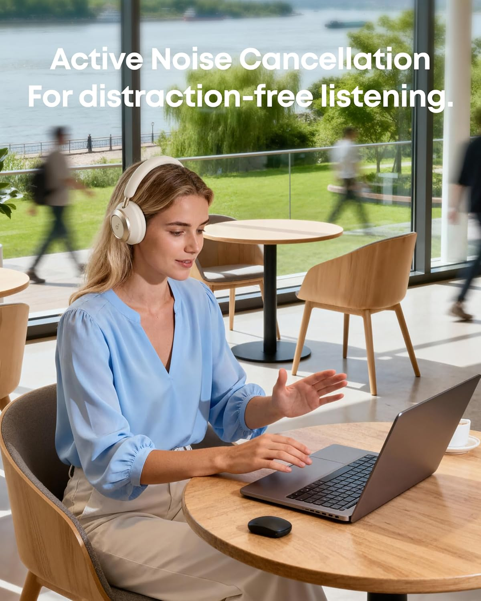
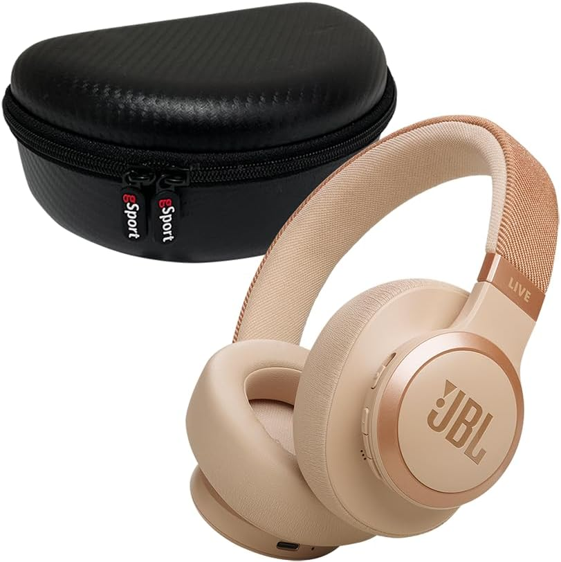

¿Qué auriculares inalámbricos calidad precio comprar en 2026?
La respuesta no está solo en el precio. Unos buenos auriculares Bluetooth deben equilibrar cinco cosas: calidad de sonido, comodidad en sesiones largas, autonomía, cancelación de ruido y conectividad estable. En 2026, el mercado está lleno de opciones, pero no todas compensan lo que cuestan. Por eso, para esta guía he priorizado modelos con especificaciones claras, marcas fiables y precios que siguen moviéndose en una franja lógica para la mayoría de compradores.
Los tres modelos elegidos destacan por motivos distintos. Sony mantiene una propuesta muy ligera y cómoda; Soundcore aprieta mucho por funciones y rendimiento; y JBL ofrece una autonomía sobresaliente con un perfil de sonido muy comercial. Además, sus fichas oficiales y listados actuales muestran datos sólidos en batería, cancelación de ruido y precio de referencia, lo que los convierte en candidatos muy competitivos dentro del rango calidad precio.
Comparativa rápida: mejores auriculares inalámbricos calidad precio 2026
| Modelo | Lo mejor | Batería | Precio orientativo | Para quién |
|---|---|---|---|---|
| Sony WH-CH720N | Muy ligeros, cómodos y con ANC solvente | 50 h sin NC / 35 h con NC | Desde 67,90 €; tienda Sony 79,00 € | Trabajo, estudio y uso diario |
| Soundcore Space One | Funciones premium y gran valor | 55 h sin ANC / 40 h con ANC | Desde 68,71 € | Quien quiere más por menos |
| JBL Tune 770NC | Autonomía brutal y graves potentes | Hasta 70 h | Desde 75,95 €; Amazon 79,99 € | Viajes, ocio y batería larga |
1. Sony WH-CH720N
El Sony WH-CH720N es probablemente el modelo más equilibrado si buscas auriculares inalámbricos calidad precio para usar todos los días. Sony lo posiciona como una opción ligera con cancelación de ruido basada en Dual Noise Sensor y procesador V1, y eso se nota especialmente si trabajas desde casa, estudias en cafeterías o simplemente quieres aislarte sin irte a gamas mucho más caras. Además, pesa solo 192 gramos, algo que marca diferencia en comodidad frente a muchos rivales.
Otro punto fuerte es la autonomía. La ficha comparativa en Amazon España indica 50 horas sin cancelación y 35 horas con cancelación activa, más carga rápida de 3 minutos para 1 hora de reproducción. En precio, se mueve alrededor de los 67,90 € en comparadores y Sony lo lista a 79,00 € en su tienda oficial, así que suele quedar en una franja muy interesante para lo que ofrece.
Por qué lo recomiendo
- Muy ligero para llevarlo durante horas.
- Cancelación de ruido convincente para su precio.
- Buena autonomía y carga rápida útil.
- Ideal para oficina, teletrabajo y desplazamientos diarios.
Mi veredicto: si quieres una compra segura y equilibrada, este Sony es el más redondo para la mayoría.
Ver Sony WH-CH720N en Amazon2. Soundcore Space One

El Soundcore Space One es uno de los auriculares que más valor entrega por euro invertido. Soundcore destaca ANC adaptativo, soporte LDAC, HearID, 55 horas de batería con ANC desactivado y 40 horas con ANC activado, además de carga rápida de 5 minutos para 4 horas. Sobre el papel, es una propuesta muy agresiva para quien quiere extras normalmente asociados a gamas más caras.
Lo interesante aquí es que no solo compite en números. En comparadores de precio aparece desde 68,71 €, lo que lo convierte en una de las mejores oportunidades del año para quien prioriza funciones premium sin pasarse de presupuesto. Su enfoque encaja muy bien para viajes, música en streaming, uso en móvil y usuarios que sí valoran poder tocar ecualización y app.
Por qué lo recomiendo
- Excelente relación calidad precio.
- LDAC y funciones avanzadas poco comunes en este rango.
- Muy buena autonomía incluso con ANC.
- Perfecto para quien quiere “más tecnología€ sin subir de gama.
Mi veredicto: si buscas el auricular más completo por lo que cuesta, este Soundcore es una compra muy inteligente.
Consejo de compra: si ves el Space One cerca de 70 €, suele ser una oferta especialmente buena dentro de su categoría.
Ver Soundcore Space One en Amazon3. JBL Tune 770NC

El JBL Tune 770NC destaca por una cosa que muchos compradores valoran por encima de todo: la batería. JBL habla de hasta 70 horas de autonomía y carga rápida de 5 minutos para 3 horas adicionales, junto con cancelación de ruido adaptativa y Smart Ambient. Para viajes largos, oficina o simplemente para olvidarte del cargador durante días, es una opción muy fuerte.
En precio actual, el modelo aparece desde 75,95 € en comparadores y en Amazon España ronda los 79,99 €, así que sigue siendo competitivo frente a rivales directos. Además, el sonido JBL Pure Bass suele gustar mucho a quien prefiere graves con pegada y un perfil divertido para música comercial, electrónica o vídeos.
Por qué lo recomiendo
- Batería sobresaliente.
- Buen equilibrio entre ocio, viajes y uso diario.
- Perfil sonoro con graves potentes.
- Muy buena compra si no quieres cargar auriculares cada pocos días.
Mi veredicto: si tu prioridad es autonomía larga y sonido enérgico, el JBL Tune 770NC tiene muchísimo sentido.
Ver JBL Tune 770NC en AmazonCuál elegir según tu perfil
Si quieres una recomendación simple, aquí va. Compra el Sony WH-CH720N si valoras comodidad, ligereza y una experiencia muy equilibrada. Elige el Soundcore Space One si quieres exprimir al máximo tu presupuesto y tener más funciones por menos dinero. Quédate con el JBL Tune 770NC si odias cargar auriculares a menudo y te gusta un sonido con pegada.
Los tres son buenos, pero no son iguales. Por eso, la mejor compra no es necesariamente el más barato, sino el que mejor encaja con cómo escuchas música, trabajas o viajas cada día. En esta comparativa de mejores auriculares inalámbricos calidad precio 2026, esos tres modelos siguen siendo de los más sensatos por especificaciones, precio y utilidad real.
Conclusión final
Si tuviera que quedarme con una compra global, el Sony WH-CH720N es el más equilibrado para la mayoría. Si quisiera la mejor relación funciones/precio, iría a por el Soundcore Space One. Y si buscara autonomía por encima de todo, elegiría el JBL Tune 770NC.
No necesitas gastar una fortuna para conseguir buenos auriculares Bluetooth en 2026. La clave está en comprar con criterio y no dejarte llevar solo por el marketing. Con cualquiera de estos tres modelos, estás entrando en una gama muy razonable donde todavía hay valor real por el dinero invertido.
Compra ahora los mejores auriculares inalámbricos calidad precio 2026
Compara precios, revisa ofertas y elige el modelo que mejor encaja contigo.
Ver ofertas en Amazon